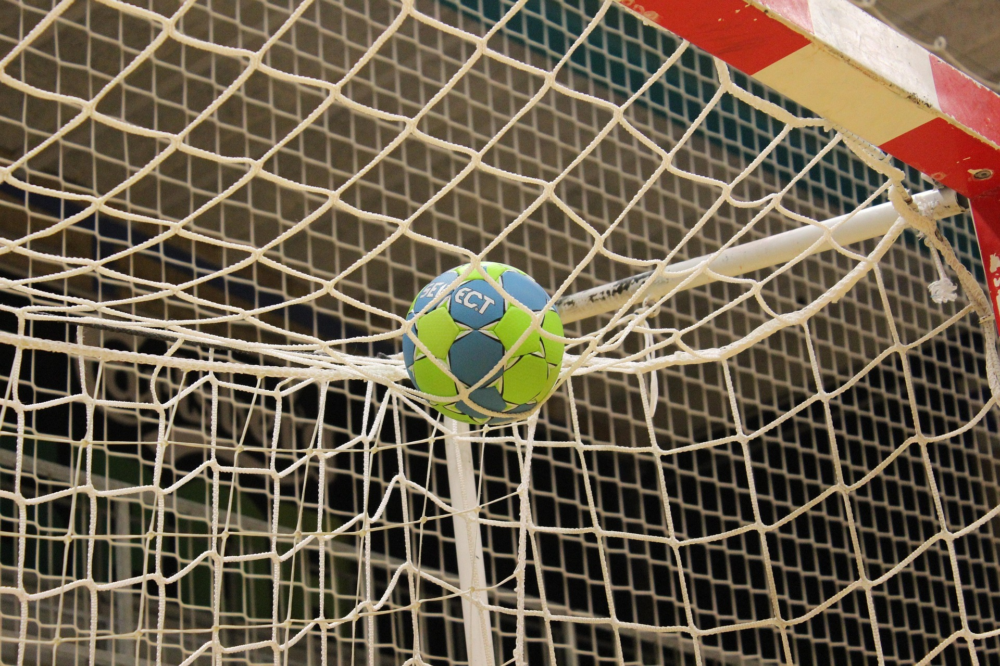
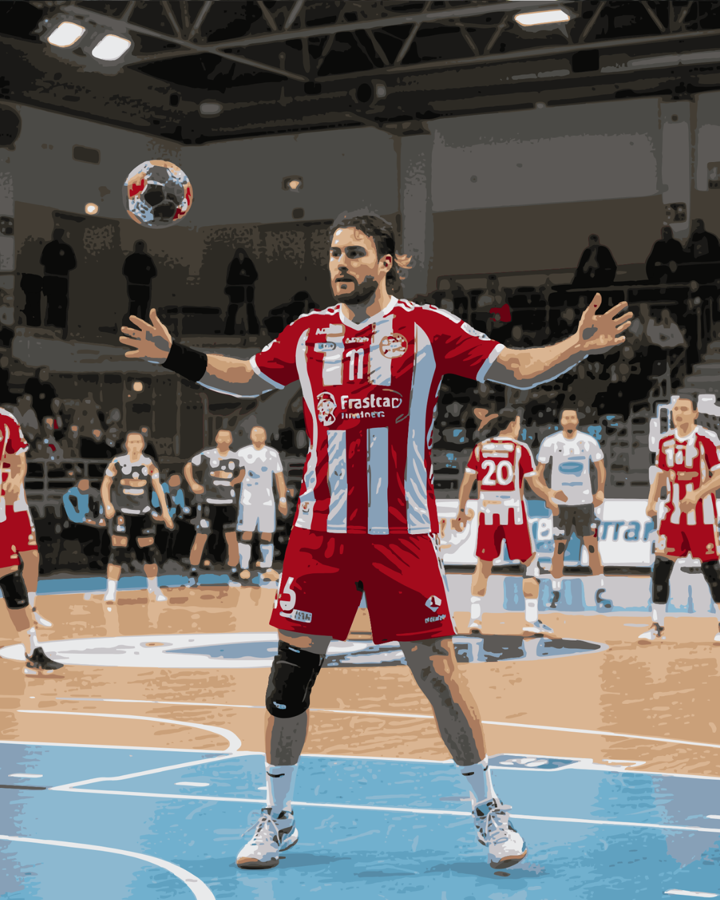
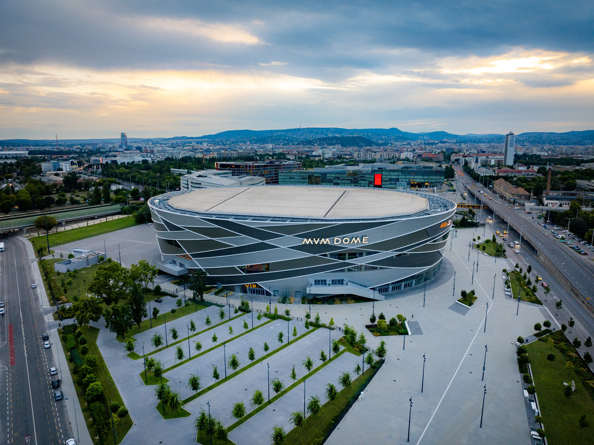
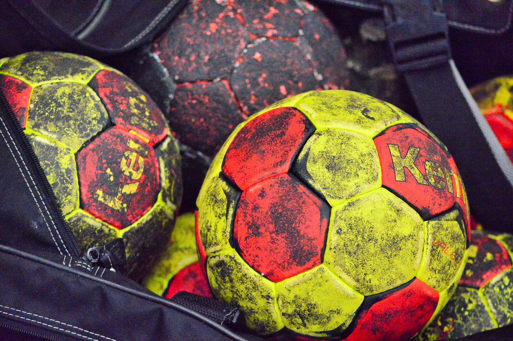

A kézilabda egy rendkívül dinamikus és izgalmas csapatsport, amelyet világszerte milliók követnek és játszanak. A játék célja, hogy a csapatok kézzel juttassák a labdát az ellenfél kapujába, miközben védekeznek a saját kapujuk előtt. A kézilabda gyors tempója, fizikai intenzitása és taktikai mélysége miatt különösen népszerű Európában.
A modern kézilabda a 19. század végén alakult ki, és azóta folyamatos fejlődésen ment keresztül. A játék különböző változatai léteztek, például a nagypályás kézilabda, de ma már a teremkézilabda a legelterjedtebb forma. A sportág olimpiai szereplése tovább növelte népszerűségét.
A kézilabda különlegessége abban rejlik, hogy egyszerre igényel gyorsaságot, erőt, állóképességet és stratégiai gondolkodást. A játékosok folyamatos mozgásban vannak, támadásból védekezésbe váltanak másodpercek alatt. A kapus szerepe különösen fontos, hiszen gyakran ő dönti el a mérkőzések kimenetelét.
A kézilabda egy olyan sportág, amely az évek során komoly taktikai és technikai fejlődésen ment keresztül. A modern játék rendkívül gyors, ahol a csapatok különböző támadási és védekezési rendszereket alkalmaznak. A védekezés lehet zónavédekezés vagy emberfogás, míg támadásban különböző figurákat használnak a védelem feltörésére.
A játékosok posztjai különböző szerepeket töltenek be: irányító, átlövő, szélső és beálló. Minden posztnak megvan a maga sajátossága és taktikai jelentősége. Az irányító szervezi a játékot, míg az átlövők nagy erejű lövéseikkel veszélyeztetnek.
A kézilabda különösen népszerű Magyarországon, ahol számos nemzetközi sikert értek el a válogatottak és klubcsapatok. A sportág utánpótlás-nevelése is kiemelkedő, így folyamatosan érkeznek az új tehetségek.
Ha szeretnél még többet megtudni a kézilabdáról, látogass el a Wikipédia oldalára.
Kézilabda Wikipédia cikk